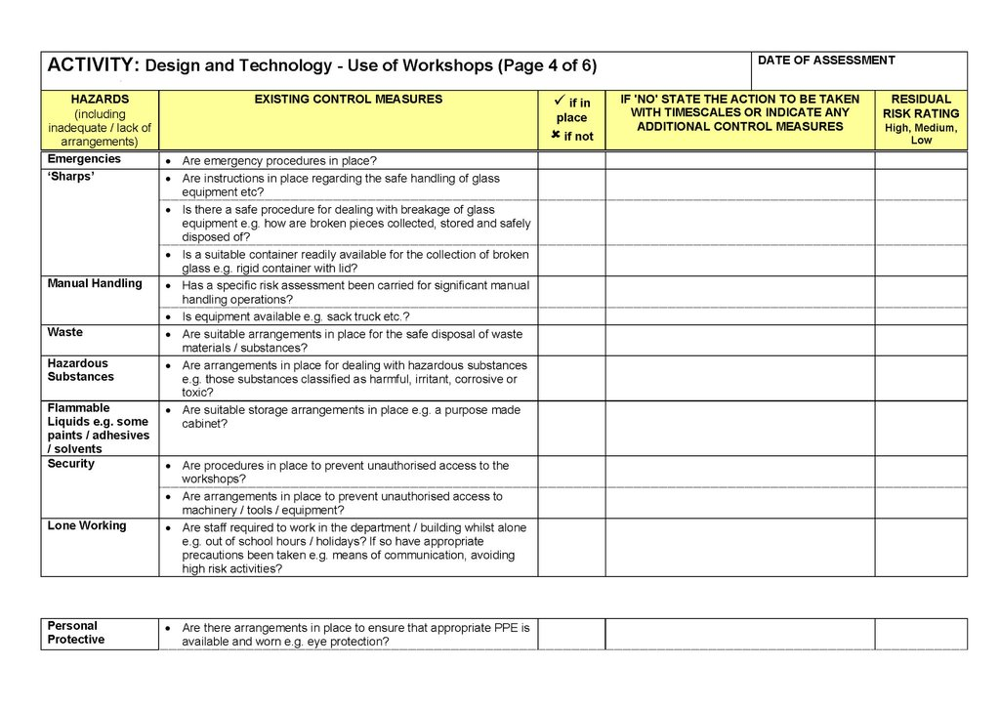

9 - Health and Safety
Table of Contents
1 Ensuring Health and Safety when working with materials in a workshop
9.1a Demonstrate an understanding of safe working practices in the workshop situation, including:
i. understanding the need for risk assessments.
As part of managing the health and safety of your project you must control the risks in your clasrrom environment. To do this you need to think about what might cause harm to you and the people around you and decide whether you are taking reasonable steps to prevent that harm. This is known as risk assessment.

ii. identifying hazards and implementing control measures to minimise risks.
One of the most important aspects of your risk assessment is accurately identifying the potential hazards in the classroom. A good starting point is to walk around your classroom and think about any hazards. In other words, what is it about the activities, processes or substances used that could injure yourself or other students or harm their health?
9.1b Demonstrate an understanding of how to work safely with specialist tools, techniques, processes, equipment and machinery during the design and manufacture of products.
When designing and making your project, you will need to demonstrate you have considered in advance what all the risks are and what you plan to do to minimise the risks.
Once you have considered all the steps and written down what you plan to do, you will then need to do the activity, showing and explaining how you went about implementing all of the H&S strategies.
These can be in the form of photographs or explanations, but you will need to do this for every activity or step.